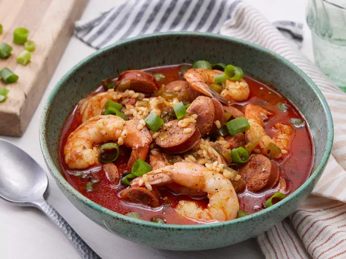

Home
Chef John's Sausage & Shrimp Jambalaya

A Cajun Comfort Food classic
While shrimp jambalaya is really more of a thicker rice stew than a soup,
it's one of those dishes that can be customized. Add more stock to easily
make it into a soup recipe. Serve garnished with green onion.
This hearty shrimp jambalaya is full of flavor with sausage, rice,
vegetables, and spices.
Ingredients
- 2 tablespoons butter
- 8 ounces andouille sausage, cut into 1/4-inch slices
- 2 tablespoons ground paprika
- 1 tablespoon ground cumin
- ½ teaspoon cayenne pepper
- ½ cup diced tomatoes
- 2 stalks celery, sliced 1/4 inch thick
- 1 large green bell pepper, diced
- 4 green onions, thinly sliced
- 1 teaspoon salt
- 1 bay leaf
- 1 cup uncooked brown rice
- 3 cups chicken stock
- 1 pound large shrimp, peeled and deveined
- salt and ground black pepper to taste